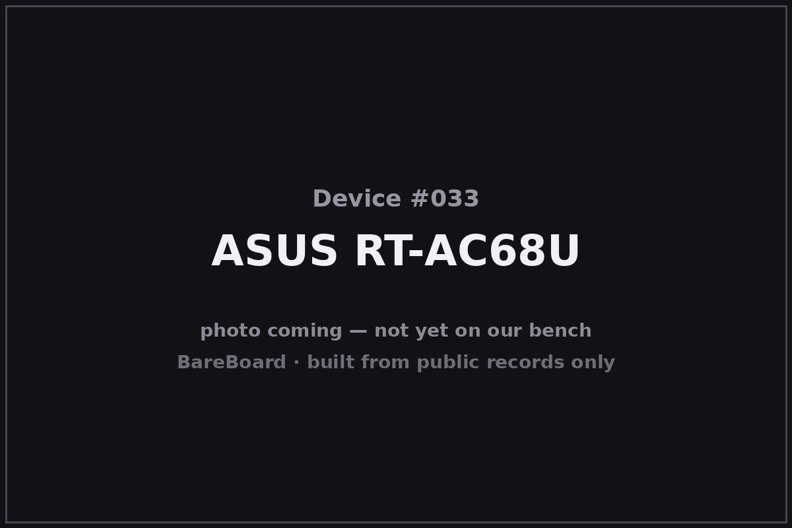

The Autopsy Report · Device #033
The ASUS RT-AC68U
The AC1900 workhorse that refused to die — sold for a decade, rebadged by T-Mobile, and still getting firmware long after its rivals were landfill.
What is this thing?
The ASUS RT-AC68U is a dual-band 802.11ac (“Wi-Fi 5”) router rated AC1900 — up to 600 Mbps on 2.4 GHz plus 1300 Mbps on 5 GHz — with 3×3 MIMO, beamforming, and four gigabit Ethernet ports. It launched in 2013 and simply never left: ASUS kept it in the lineup for years, it gained AiMesh mesh-networking support later in life, and carrier variants like T-Mobile's TM-AC1900 shipped the same hardware under another name. FCC filing ASUS rescue FAQ
This report covers the original RT-AC68U hardware. ASUS later shipped a V2 revision under a separate FCC ID (MSQ-RTAC68UV2) — different hardware, different filing, kept separate here. FCC filing
Not on our bench (yet)
This device is not on our bench. We have never owned, opened, photographed, measured, or powered on the RT-AC68U. Everything in this report comes from public records: government filings, manufacturer documents, manuals, and credible public teardowns and hardware databases. Where a fact would require holding the hardware in our hands — our own photos, our measurements, our boot logs, the exact board revision of a future unit — we say so, out loud, and mark it unknown. Nothing here is presented as first-hand BareBoard evidence.
That constraint is also the point: you can learn a remarkable amount about a device without ever touching it, because the public record is deep. What follows is everything the record could tell us — and an honest map of where the record runs out.
A short history
- 2013-09-30The FCC grants equipment authorization MSQ-RTAC68U to ASUSTeK Computer Inc. — the RT-AC68U (also covering the RT-AC68R, RT-AC68RW, and T-Mobile's TM-AC1900) enters the U.S. market as an AC1900 flagship. FCC filing
- 2013–2015The router earns its reputation: Broadcom's 800 MHz dual-core BCM4708A0, 256 MB RAM, USB 3.0, and ASUS's unusually rich stock firmware — plus a thriving third-party firmware scene — make it the default recommendation for years. FCC filing SNBForums
- 2016-05-11Class II permissive changes to the FCC authorization run through this date; ASUS notes that newer V2 hardware carries its own ID, MSQ-RTAC68UV2. FCC filing
- 2013–presentA decade on shelves. ASUS's official rescue-mode documentation still uses the RT-AC68U as its worked example — a sign of how long this platform stayed in service. ASUS rescue FAQ
The outside
The RT-AC68U is a flat black slab with a diamond-pattern top and three external detachable antennas — the classic late-2013 flagship look. Front LEDs report power, internet, 2.4 GHz, 5 GHz, USB, and LAN status; the rear carries four gigabit LAN ports, one gigabit WAN port, a USB 3.0 port, a USB 2.0 port, power, and the recessed reset button that doubles as the rescue-mode trigger. FCC filing

Carrier variants wore the same shell: T-Mobile's TM-AC1900 is the same hardware in T-Mobile trim, and the RT-AC68R/RT-AC68RW are retail-channel twins of the RT-AC68U. FCC filing
The board
One board built around Broadcom's BCM4708A0 — an 800 MHz dual-core ARM Cortex-A9 SoC — with separate 2.4 GHz and 5 GHz radio chains under shield cans, a Spansion NAND flash for firmware, and ESMT DDR3 for working memory. The FCC filing's public internal photos show the layout: SoC and memory center-stage, radio sections shielded, power regulation along one edge. FCC filing
Public discussion among owners documents an unpopulated or accessible serial console header used for low-level recovery — the kind of thing third parties write “unbrick over serial” guides about. SNBForums We have not verified the header's location, pinout, or baud rate; that is bench work.
Under the microscope: the chips
What's on the RT-AC68U board, per the equipment-authorization exhibits and corroborating public records. Confirmed means a primary source — the FCC filing or the manufacturer.
| Chip | What it does | How we know | Dig deeper |
|---|---|---|---|
| Broadcom BCM4708A0 | The main SoC — 800 MHz dual-core ARM Cortex-A9 running the router, its USB ports, and the Ethernet switch. | Confirmed Named in the FCC filing's public exhibits for MSQ-RTAC68U. | FCC filing |
| Spansion S34ML01G100TFI00 1 Gb NAND | The flash chip holding the firmware (128 MB). | Confirmed Named in the FCC filing's public exhibits for MSQ-RTAC68U. | FCC filing |
| ESMT M15F2G16128A-ADB 2 Gb DDR3 | Working memory for the SoC (256 MB). | Confirmed Named in the FCC filing's public exhibits for MSQ-RTAC68U. | FCC filing |
| Richwave RTC6649E | An RF front-end part in the wireless chain. | Likely Named in public hardware records for this model; exact stage role not verified from a primary source. | FCC filing |
The 2.4 GHz and 5 GHz radio chains sit under soldered shield cans in the filing photos; their exact part markings are not public. No public datasheets were located for the Broadcom SoC — Broadcom does not publish them.
The government's file on this box
The government's file on this router is public under FCC ID MSQ-RTAC68U, granted to ASUSTeK Computer Inc. on September 30, 2013, with Class II changes running through May 11, 2016. FCC filing
- What's public: internal and external photos, the manual, test reports, and RF-exposure exhibits. The lab's conducted-output figures are filing-specific: about 770 mW at 2.4 GHz, 430 mW in one later lower-5-GHz filing, and up to 960 mW in an upper-5-GHz filing — each tied to its own grant, not blended into one number.
- Scope: the authorization covers the RT-AC68U, RT-AC68R, RT-AC68RW, and the T-Mobile TM-AC1900 as the same hardware. The later V2 hardware is a separate authorization, MSQ-RTAC68UV2 — not this filing.
Browse it yourself: filing page
Service, recovery, and debug modes
We listen, we don't knock: this section documents only that service or recovery modes exist in the public record, and what kind of thing they are — never how to defeat a lock.
ASUS documents a rescue mode for this router in its official support FAQ — and uses the RT-AC68U as the worked example. Holding the reset button puts the router into rescue mode (the power LED flashes slowly), after which ASUS's Firmware Restoration utility can reload firmware. ASUS rescue FAQ That's a manufacturer-supported recovery path, documented for owners — we describe its existence, not a procedure.
Separately, public third-party discussion documents serial-console recovery (e.g. an “unbrick over serial” guide using a Raspberry Pi), which implies an accessible UART header on the board. SNBForums Third-party evidence only; pinout and settings unverified.
What the public record shows
Ten-year hardware is a security story. A router this long-lived accumulates firmware history — features, fixes, and eventually end-of-support. The public record shows ASUS supporting this platform far longer than most rivals supported theirs, which is part of why so many are still in service.
One board, many badges. The FCC filing ties the RT-AC68U, RT-AC68R, RT-AC68RW, and T-Mobile's TM-AC1900 to the same authorization — a reminder that carrier “exclusives” are often the same hardware in different clothes. FCC filing
The rescue mode is the headline feature of the debug story. Most routers hide recovery; ASUS documented this one's, with a utility to match. For a device family famous for third-party firmware experiments, a manufacturer-blessed way back from a bad flash is the difference between a brick and a lesson.
What we didn't do
- We never had a unit, so we took no photographs and no measurements.
- We never opened an enclosure or lifted an RF shield.
- We never captured a boot log or probed a debug port.
- We never extracted, modified, redistributed, or ran the device's firmware.
- We never defeated a lock, bypassed authentication, or recovered credentials or keys — and we publish none.
- We never tested an exploit or a vulnerability against any device.
- Anything below marked Unknown stays unknown until a unit reaches our bench.
By the numbers
- Device: ASUS RT-AC68U (AC1900); twins: RT-AC68R, RT-AC68RW, T-Mobile TM-AC1900
- Era: 2013–present
- FCC ID: MSQ-RTAC68U (ASUSTeK; granted 2013-09-30; Class II changes through 2016-05-11)
- V2 hardware: Separate authorization: MSQ-RTAC68UV2
- Wireless: AC1900 — 600 Mbps @ 2.4 GHz + 1300 Mbps @ 5 GHz, 3×3 MIMO, beamforming
- Conducted power (per filing): ~770 mW @ 2.4 GHz; ~430 mW lower-5 GHz (later filing); up to ~960 mW upper-5 GHz
- Main chip: Broadcom BCM4708A0, 800 MHz dual-core ARM Cortex-A9
- Memory: 256 MB RAM; 128 MB flash
- Ports: 4× gigabit LAN, 1× gigabit WAN, USB 3.0 + USB 2.0
Words to know
Every term this page uses, in plain English. No prior knowledge required.
- AC1900
- A speed class: up to ~600 Mbps on 2.4 GHz plus ~1300 Mbps on 5 GHz, added together for marketing. Real-world speeds are lower.
- MIMO
- Multiple-input, multiple-output: using several antennas and radio chains at once to move more data. 3×3 means three streams each way.
- Beamforming
- The router focuses its radio energy toward your device instead of broadcasting equally in all directions.
- AiMesh
- ASUS's system for linking multiple ASUS routers into one mesh Wi-Fi network.
- Rescue mode
- A manufacturer-built recovery state — here, triggered by the reset button — that lets you reload firmware when the normal software won't boot.
- UART / serial console
- A simple port that lets you watch a device narrate its own startup, line by line.
- FCC ID
- The ID the FCC assigns to each approved wireless product. Punch it into fccid.io and the whole public filing comes up.
- FCC
- The Federal Communications Commission — the U.S. agency that regulates anything that transmits radio.
Sources & confidence
- FCC equipment authorization MSQ-RTAC68U (grantee ASUSTeK Computer Inc., grants 2013-09-30, Class II changes through 2016-05-11; conducted powers ~770/~430/~960 mW per filing): primary evidence. High confidence.
- Chip identities (BCM4708A0, Spansion NAND, ESMT DDR3): the filing's public exhibits. High confidence. Richwave front-end part: public hardware records, medium confidence.
- Rescue mode (reset-button trigger, slow-flash power LED, Firmware Restoration utility): ASUS's official support FAQ, using the RT-AC68U as its example. High confidence in the existence claim.
- Serial-console recovery: third-party SNBForums guide. Low-medium confidence; existence only, no verified pinout.
- Carrier/retail variants sharing the authorization (RT-AC68R/RW, TM-AC1900) and V2's separate ID (MSQ-RTAC68UV2): the FCC filing. High confidence.
Anything not listed here is unknown until the bench says otherwise. We'll say so, out loud, when that's the case.
Legal note. BareBoard is an educational project. This page is built entirely from public records — government filings, manufacturer documents, and published third-party research — about hardware we have never possessed. We don't publish, host, or distribute firmware, keys, passwords, or credentials, and nothing here is instructions for defeating a lock or an authentication check. Product names and trademarks belong to their respective owners and appear here only to identify the hardware. If you believe anything here infringes your rights, contact us and we'll address it promptly.